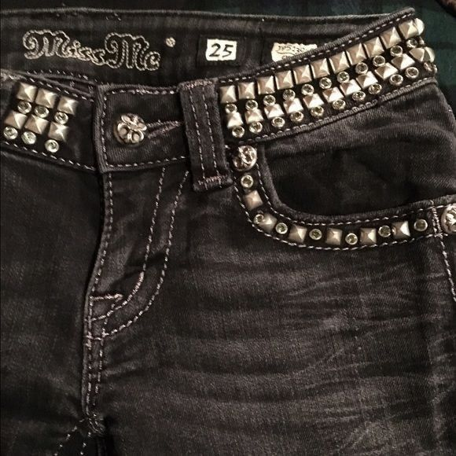
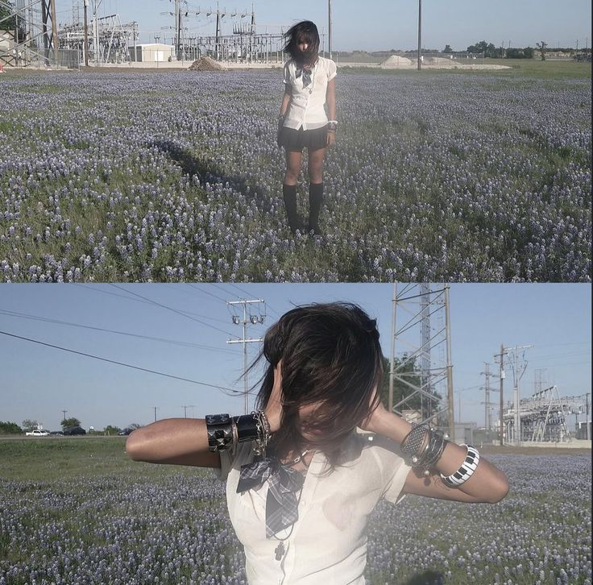

usually i find all of my fashion inspirations either on pinterest or in tiktok. here are some exaples, of what really gives me some ideas.


SOMETHING THAT REALLY FINDS ITS PLACE IN MY HEART
Sometimes, when i am really upset about everything art, and espasially fashion, gives me more power to live through the day
LEARN MORE